Network Analysis Tool
Wireshark
مرجع المذاكرة الشامل
دليل مرجعي منظم لتحليل حركة الشبكة باستخدام Wireshark — من الأساسيات إلى التقنيات المتقدمة في التحليل الأمني.
Passive
أداة تحليل لا تمنع ولا تنبّه
PCAP
صيغة ملف التقاط الشبكة
Layers
تحليل طبقي كامل للبروتوكولات
SOC
أداة أساسية في تحليل الحوادث
1
ما هو Wireshark؟
Introduction & Core Concept
التعريف الأساسي
Wireshark هو أداة تحليل شبكات تتيح التقاط وفحص حركة البيانات (Packets) التي تمر عبر الشبكة. كل نشاط شبكي — تصفح، تسجيل دخول، نقل بيانات — يتحول إلى Packets يمكن فتحها وقراءتها.
نموذج الطبقات
الشبكة تعمل بنظام Layers، وكل Packet تظهر في Wireshark مقسمة على هذه الطبقات:
Application (HTTP, DNS)
Transport (TCP/UDP)
Network (IP)
Data Link (Ethernet)
⚠
Wireshark ليس IDS
Wireshark هو Passive Analyzer فقط — لا يكتشف هجمات تلقائياً ولا يمنع أي نشاط. دوره هو العرض والتحليل. المحلل هو من يلاحظ ويستنتج. للكشف التلقائي استخدم IDS مثل Snort.
IDS (Snort)
Detection + Alerts
2
حالات الاستخدام الرئيسية
Use Cases
Network Troubleshooting
تشخيص مشكلات الشبكة على مستوى الـ Packet:
tcp.analysis.retransmission
كثرة الـ Retransmissions = Packet Loss أو Congestion = بطء الشبكة.
Security Analysis
كشف التهديدات الأمنية:
arp
كشف Rogue Host عبر MAC غير معروف
tcp.flags.syn==1 and tcp.flags.ack==0
كشف Port Scanning
dns
كشف DNS Tunneling
Protocol Analysis
فهم البروتوكولات وسلوكها. مثال HTTP:
- Request: Method + URI
- Response: Status Code + Data
- استخراج ملفات وCredentials (HTTP)
→
Workflow تحليل المحلل
1. حدد الهدف (بطء / هجوم / تحليل بروتوكول) → 2. استخدم Filters → 3. اربط بين Packets → 4. استنتج السلوك
3
واجهة البرنامج – GUI
Wireshark Interface Overview
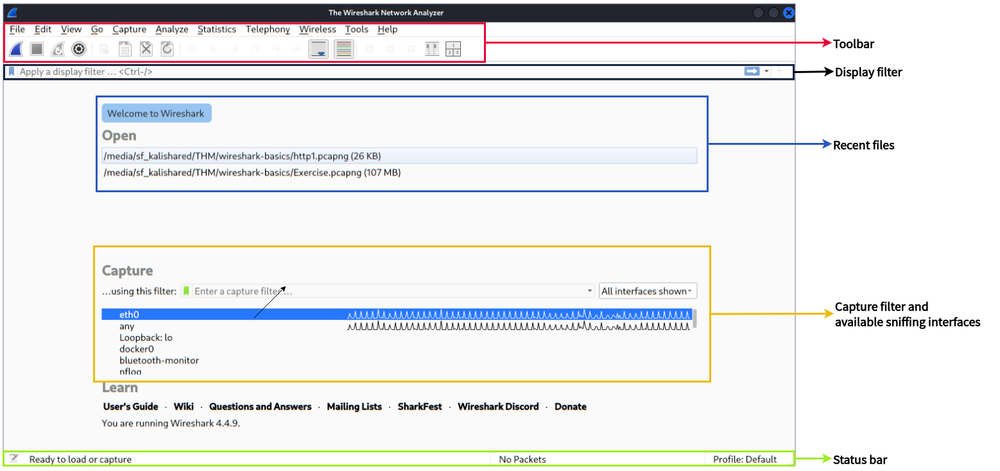
الواجهة الرئيسية لـ Wireshark
Toolbar
شريط الأدوات العلوي يحتوي على:
▸
Start / Stop / Restart Capture
▸
Export Objects — استخراج ملفات من الترافيك (صور، exe، html)
Display Filter Bar
سلاحك الأساسي في التحليل — ليس مجرد فلتر بل لغة تحليل كاملة:
http.request.method=="POST"
tcp.port==443 and ip.dst==10.10.10.10
dns.qry.name contains "login"
→
استخدم Autocomplete بضغط Ctrl + Space
Capture Interfaces
اختيار الـ Interface الصحيح ضروري قبل بدء الالتقاط:
eth0 | Network card الرئيسي |
lo | Localhost traffic فقط |
⚠
اختيار Interface غلط = لن ترى الترافيك المطلوب
Status Bar
يعرض في أسفل الشاشة معلومات مهمة:
▸
عدد الباكيتات الكلي والمفلتر
▸
Dropped Packets — إذا ظهرت: الجهاز لا يستطيع مواكبة الترافيك
Capture Filter vs Display Filter
| النوع | وقت التطبيق | الهدف | الاستخدام |
|---|
| Capture Filter | قبل التسجيل | تقليل حجم البيانات الملتقطة | لتحسين الأداء |
| Display Filter | بعد التسجيل | تحليل الـ PCAP المحفوظ | الأكثر استخداماً |
4
الأقسام الثلاثة للتحليل
Packet List / Details / Bytes
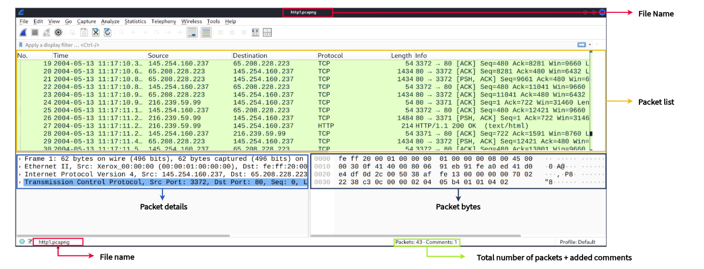
تقسيم شاشة Wireshark الثلاثي
Packet List — المستوى الأول (High-level Overview)
يعرض جميع الباكيتات في جدول. الأعمدة المهمة: Time Source/Destination Protocol Length Info
→
HTTP = نشاط ويب | DNS = Domain Resolution | TCP = طبقة النقل — يساعدك على Profiling سريع للترافيك
Packet Details — المستوى الثاني (التحليل الحقيقي)
يعرض تفاصيل الـ Packet مقسمة Layer by Layer. اضغط على أي Layer لتوسيعها:
Frame
→
Ethernet II
→
IPv4
→
TCP
→
HTTP
Sequence & Acknowledgment Numbers مفيدة في تتبع الجلسة واكتشاف Packet Loss وإعادة بناء الترافيك.
Packet Bytes — المستوى الثالث (Low-level)
يعرض البيانات الخام بصيغة Hex وASCII. مفيد في: Malware Analysis، استخراج Data، Reverse Engineering.
GET /login HTTP/1.1 ← يظهر واضحاً في ASCII
عند الضغط على أي Layer في Packet Details، يقوم Wireshark بتمييز البايتات المقابلة لها تلقائياً.
✖
أخطاء شائعة يجب تجنبها
لا تعتمد على Packet واحدة — يجب رؤية الـ Sequence الكاملة |
لا تعتمد على عمود Info فقط — يجب الدخول داخل الطبقات |
لا تتجاهل عمود Time — فهو أساسي في التحليل الزمني
5
Coloring Rules
اكتشاف بصري سريع للأنماط والمشكلات
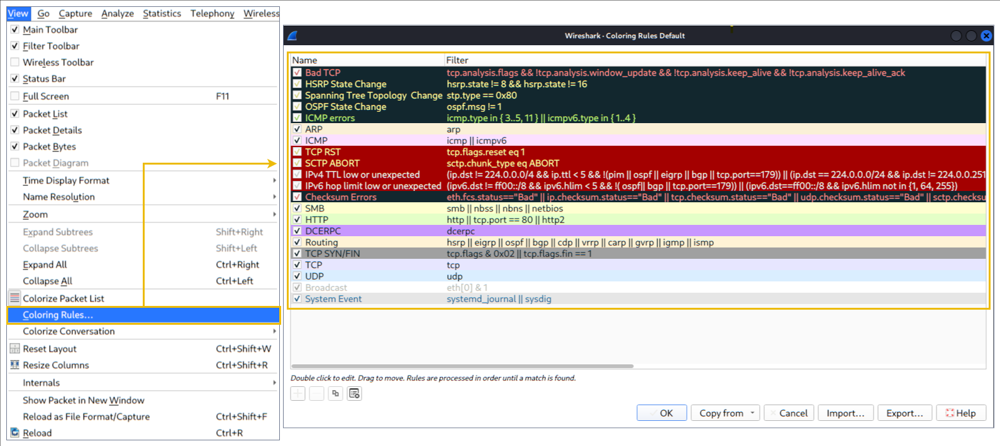
Coloring Rules في Wireshark
Wireshark يستخدم ألواناً افتراضية للتمييز بين البروتوكولات وإبراز المشكلات. مع وجود 100,000+ Packet، الألوان توجهك فوراً نحو موطن الإشكالية.
أحمر
TCP RST — اتصال انتهى فجأة. يدل على: Firewall Block، Service Down، Port Closed
برتقالي
Checksum Errors — Packet تالفة. أحياناً False Positive بسبب NIC Offloading
أخضر
HTTP / TCP Port 80 — تصفح ويب طبيعي
أصفر
ARP — مهم في اكتشاف ARP Spoofing
طريقة تفكير المحلل مع الألوان
1
افحص توزيع الألوان أولاً
4
حلل التفاصيل في Packet Details
⚠
اللون الأحمر لا يعني هجوماً دائماً، والأخضر لا يعني طبيعياً دائماً. ربط اللون بالسياق هو الأساس.
Temporary vs Permanent Coloring
Temporary
للجلسة الحالية فقط — يُستخدم في التحليل السريع.
Permanent
محفوظ في Profile — يُستخدم في العمل اليومي.
Custom Rule مفيدة
tcp.flags.syn==1 and tcp.flags.ack==0 ← يُبرز أي Port Scan فوراً
6
Traffic Sniffing – الالتقاط المباشر
Live Capture
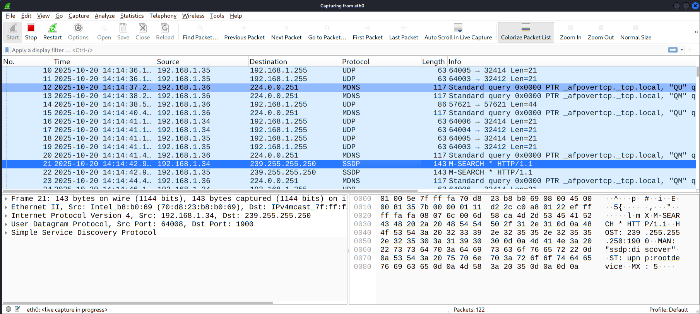
واجهة Live Capture
أزرار الالتقاط
▸
Start Capture — يبدأ الالتقاط على الـ Interface المختار
▸
Stop — يوقف الالتقاط ويحفظ البيانات
▸
Restart — يمسح الالتقاط الحالي ويبدأ من جديد
Status Bar أثناء الالتقاط
eth0: <live capture in progress>
Packets: 122
يعرض اسم الـ Interface والعدد المتراكم من الباكيتات في الوقت الحقيقي.
7
Merge PCAP
دمج ملفات الالتقاط المتعددة
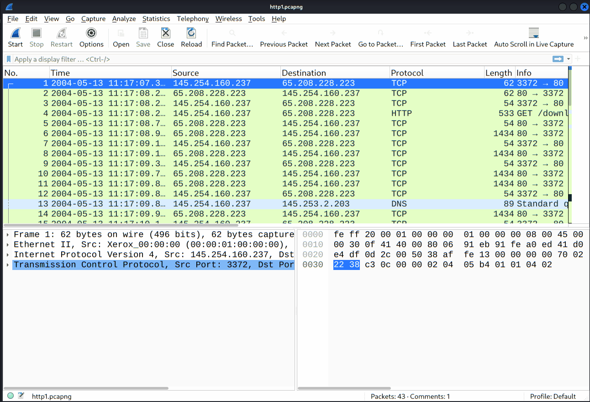
عملية دمج ملفات PCAP
متى نستخدم Merge؟
في التحليل الحقيقي قد يكون الترافيك موزعاً على ملفات متعددة: التقاط من أجهزة مختلفة، فترات زمنية متعددة، أو logs متفرقة. الدمج يتيح تحليلاً شاملاً بدلاً من التحليل المنفصل.
File → Merge
ما يفعله Wireshark عند الدمج
1
دمج جميع الباكيتات من الملفات
2
ترتيبها حسب الـ Timestamp
التسلسل الطبيعي للأحداث (Normal Session Flow)
DNS Query
→
DNS Response
→
TCP Handshake
→
HTTP Request
→
HTTP Response
بعد Merge، يمكن رؤية هذا التسلسل كاملاً حتى لو كان موزعاً على ملفات منفصلة.
مشكلات يجب الانتباه إليها
| المشكلة | السبب | التأثير |
|---|
| Time Misalignment | فرق توقيت بين الأجهزة | تحليل خاطئ للـ Sequence |
| Duplicate Packets | نفس الترافيك مسجل مرتين | تكرار يشوش التحليل |
| Different Interfaces | ملفات من eth0 وwlan0 | وجهات نظر مختلفة للترافيك |
→
Workflow بعد Merge
Statistics → Conversations لفهم العلاقات بين الأجهزة |
Statistics → Flow Graph لعرض الترافيك كـ Sequence زمني |
فلتر IP محدد للتركيز على جهاز واحد
8
File Details – خصائص ملف الالتقاط
Statistics → Capture File Properties
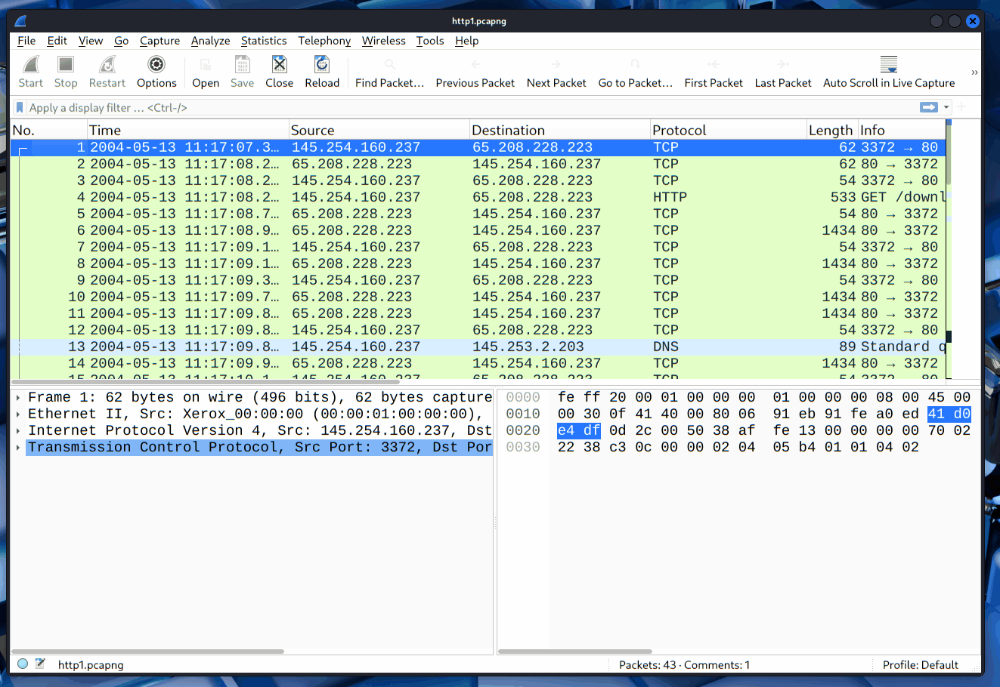
استعراض Capture File Properties
File Name & Size
تحديد الأولوية: ملف 1GB يختلف كلياً عن ملف 20KB في أسلوب المعالجة.
Capture Time (Start / End)
أهم حقل في التحقيق — يحدد الإطار الزمني للحادثة.
Interface Used
يحدد مصدر الترافيك — مهم لو عندك أكثر من Interface.
Packet Count
عدد قليل = تحليل سريع | عدد كبير = يحتاج Filtering قوي
File Hash (MD5 / SHA1 / SHA256)
بصمة الملف — تُستخدم في Digital Forensics للتحقق من عدم التلاعب بالملف.
Capture Statistics
متوسط حجم الباكيت، معدل البيانات، المدة — تعطي فكرة عن طبيعة الترافيك.
مثال على تحليل الحقول
| القيمة | الاستنتاج |
|---|
| Duration: 2s / Packets: 10,000 | Burst Traffic — محتمل DoS Attack |
| Interface: wlan0 / Traffic: DNS | WiFi Traffic — ممكن أجهزة متعددة على نفس الشبكة |
9
Packet Dissection
تحليل طبقي كامل لكل Packet
Wireshark لا يعرض الباكيت فقط — بل يُفككها (Dissect) لكل طبقة حسب البروتوكول، محولاً الـ raw bytes إلى بيانات قابلة للفهم والقراءة.
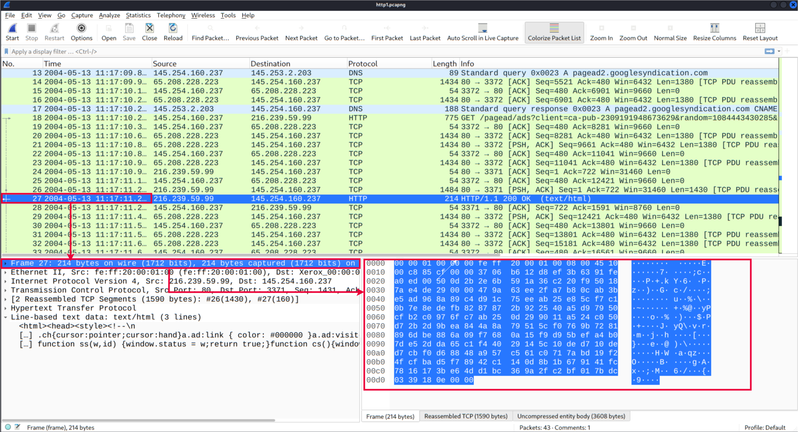
Packet 27 — نظرة عامة
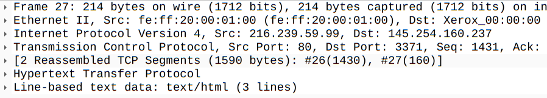
تفاصيل الـ Packet المختارة
Frame Layer — Metadata الباكيت
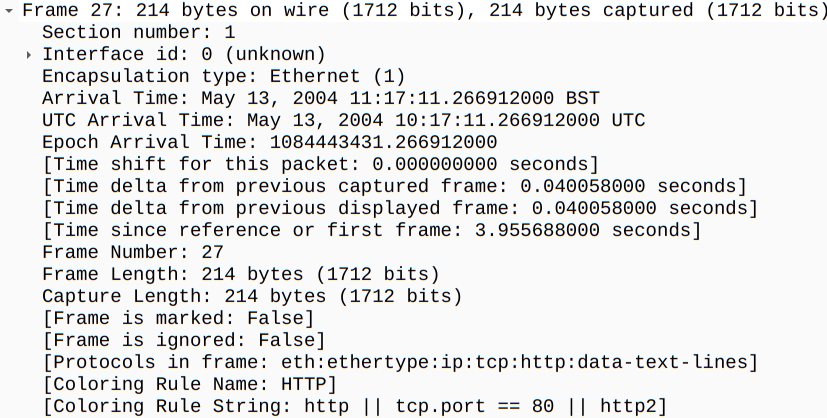
Frame Layer details
| الحقل | القيمة (مثال) | الاستخدام |
|---|
| Frame Number | 27 | تتبع الترتيب والرجوع لباكيت محددة |
| Arrival Time | May 13, 2004 11:17:11 | وقت وصول الباكيت |
| UTC Arrival Time | May 13, 2004 10:17:11 | الربط مع SIEM ولوج السيرفرات |
| Time Delta | 0.040058 seconds | تحليل Latency واكتشاف DoS |
| Frame Length | 214 bytes | الحجم الفعلي على الشبكة |
| Protocol Stack | eth:ip:tcp:http | نظرة سريعة على كل الطبقات |
Ethernet Layer — Layer 2 (MAC Addresses)
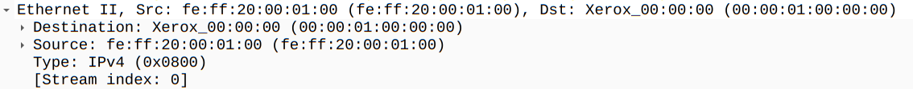
Ethernet Layer
Src MAC: fe:ff:20:00:01:00
Dst MAC: Xerox_00:00:00
يُستخدم في: تحليل ARP Spoofing وتحديد هوية الأجهزة على الشبكة المحلية.
IP Layer — Layer 3 (Routing)
Src IP: 216.239.59.99 (Server — Google)
Dst IP: 145.254.160.237 (Client)
TTL قليل = الباكيت قطعت مسافة كبيرة (كثير من الـ Hops).
TCP Layer — Layer 4 (Transport)
Src Port: 80 (HTTP Server)
Dst Port: 3371 (Client)
Seq: 1431 / Ack: 722
Flags: [PSH, ACK]
→
[TCP Reassembled Segments] — يعني أن البيانات موزعة على عدة Packets وWireshark جمعها تلقائياً. مهم في HTTP، File Downloads، وتحليل Malware.
HTTP Layer — Application Layer
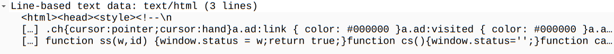
HTTP Response Data
Hypertext Transfer Protocol
HTTP/1.1 200 OK
Content-Type: text/html
الـ Response يحتوي على HTML كامل للصفحة. السيرفر يُرسل الصفحة مجزأة (TCP Segmentation) وWireshark يُعيد تجميعها (Reassembly).
→
Workflow تحليل الـ Packet
1. اختار Packet → 2. افتح Packet Details → 3. اقرأ Layer by Layer من الأسفل للأعلى → 4. ركز على IPs وPorts والبروتوكول → 5. راجع Reassembled Data
10
Packet Navigation
التنقل والأرقام
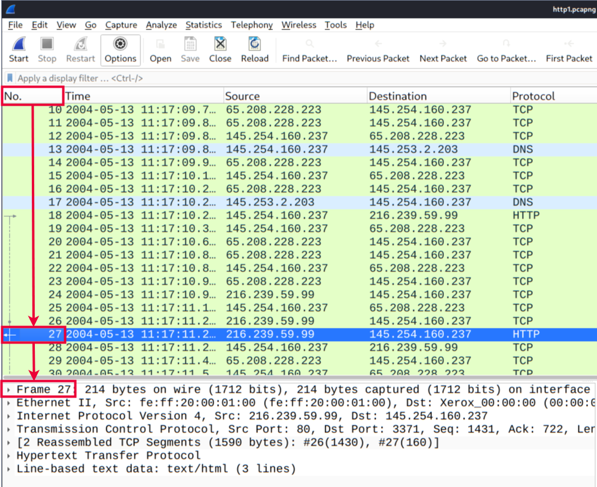
Packet Numbers في Wireshark
أهمية Packet Numbers
1
تتبع الأحداث — DNS في Packet 13، HTTP في 18، Response في 27
2
ربط الباكيتات — Packets 26+27 تمثل نفس البيانات (Reassembly)
3
الرجوع السريع — تدوين أرقام الباكيتات المهمة أثناء التحليل
Go To Packet
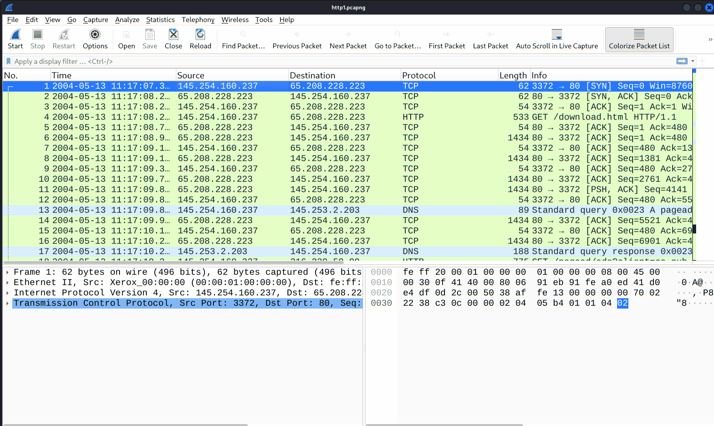
ميزة Go To Packet
Go → Go to Packet (Ctrl+G)
اكتب رقم الباكيت وينتقل إليها مباشرة. مفيد جداً عندما يُبلغ SIEM عن نشاط مشبوه في Packet رقم محدد.
تنبيه مهم: Packet Number ≠ Timestamp
الباكيت رقم 27 ليست بالضرورة تالية زمنياً للباكيت 26 (خصوصاً بعد Merge أو Reorder). لذلك يجب دائماً الربط مع عمود Time وليس الاعتماد على الرقم فقط.
→
نصيحة عملية
سجّل أرقام الباكيتات المهمة أثناء التحليل كـ Notes مثل: "Packet 102 → Login Attempt" / "Packet 110 → Credentials Exposed"
11
Find Packet
البحث داخل الترافيك (Ctrl+F)
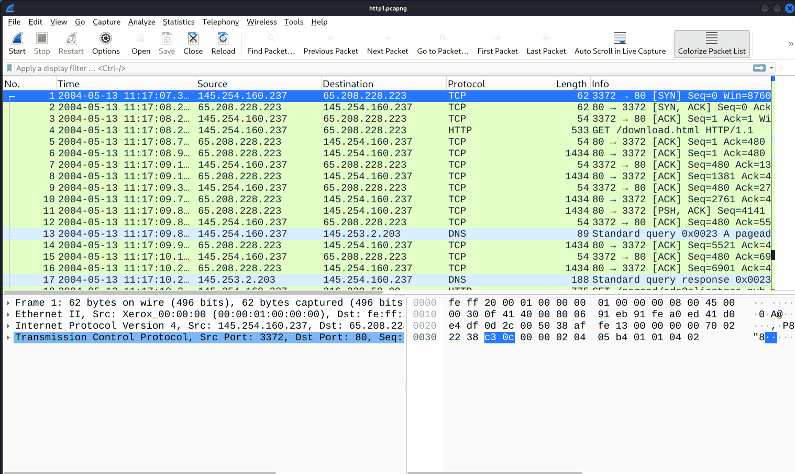
ميزة Find Packet
أنواع البحث
| النوع | الاستخدام |
|---|
| Display Filter | بحث باستخدام فلترة Wireshark مثل http.request.method=="POST" |
| String | البحث عن نص مثل login أو password — الأكثر استخداماً |
| Hex | البحث بقيم Hex مثل 48 54 54 50 (= HTTP) — لتحليل Malware |
| Regex | بحث متقدم مثل user.*login لإيجاد أنماط متغيرة |
Use Cases أمنية
passwordالبحث عن Credentials مكشوفة
cmd / powershellكشف تنفيذ أوامر عبر Malware
Cookie / Set-Cookieتحليل Sessions
user|login|passRegex يجمع كل الاحتمالات
→
Workflow احترافي
1. حدد الهدف (login / malware / error) → 2. افتح Find Packet (Ctrl+F) → 3. اختار String أو Regex → 4. حدد Packet Bytes → 5. حلل النتيجة وارتبط بـ Follow Stream
12
Mark Packet
وضع Bookmark على الباكيتات المهمة
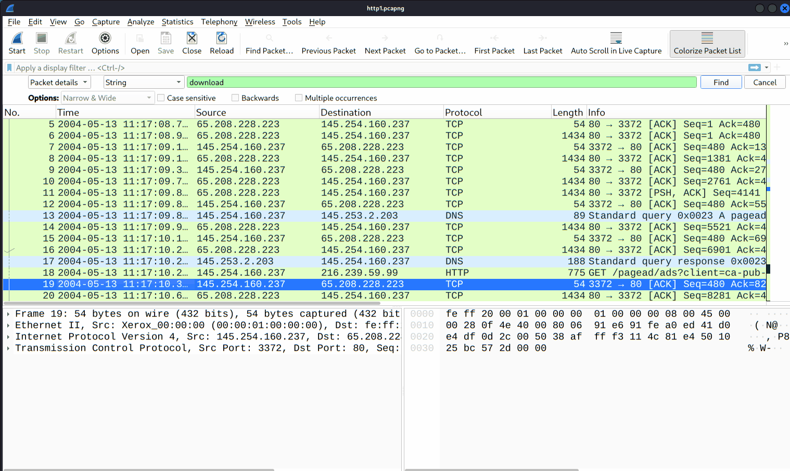
ميزة Mark Packet
كيفية الاستخدام
انقر يميناً على الباكيت → Mark/Unmark Packet
أو من: Edit → Mark/Unmark Packet
الباكيت المميزة تتحول إلى لون أسود، وتتجاهل أي Coloring Rule أخرى.
استخدامات احترافية
▸
Incident Investigation — تمييز الباكيتات التي تحتوي على Login أو أوامر مشبوهة
▸
بناء Timeline — تمييز بداية ونهاية Session لربط الأحداث
▸
Export المستهدف — تصدير الباكيتات المميزة فقط كـ Evidence
⚠
تحذير مهم
الـ Marks لا تُحفظ عند إغلاق الملف. إذا احتجت الاحتفاظ بها: اعمل Export للباكيتات المميزة، أو سجل أرقامها كـ Notes، أو استخدم Permanent Coloring Rules.
14
Export Packets
تصدير باكيتات محددة
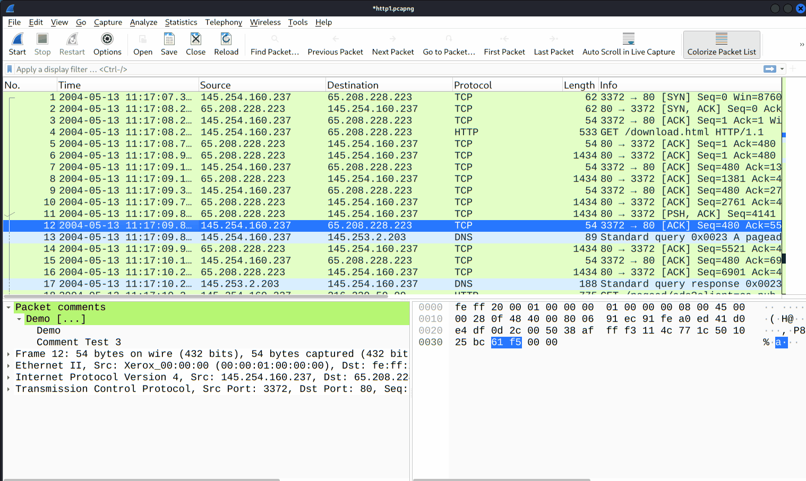
عملية Export Packets
أنواع التصدير
| النوع | الطريقة | متى تستخدمه |
|---|
| Displayed Packets | الباكيتات الظاهرة بعد الفلتر | الأكثر استخداماً — تصدير نتائج التصفية |
| Selected Packets | الباكيتات المختارة يدوياً (Ctrl+Click) | اختيار دقيق ومحدد |
| Marked Packets | الباكيتات المميزة بـ Mark | القوة الحقيقية — تصدير Evidence فقط |
| All Packets | الكل | نادر الاستخدام |
→
Workflow مثالي للـ Incident Response
1. فلتر الترافيك المشبوه (http أو dns) →
2. عيّن Mark على الباكيتات المهمة →
3. صدّر Marked Packets فقط →
الناتج: ملف صغير يحتوي على Evidence نظيف
⚠
تحذيرات مهمة
احتفظ دائماً بالملف الأصلي |
قطع الباكيتات قد يُفقدك السياق الكامل للهجوم |
استخدم تسمية واضحة: suspicious_http_traffic.pcapng
15
Export Objects
استخراج ملفات حقيقية من الترافيك
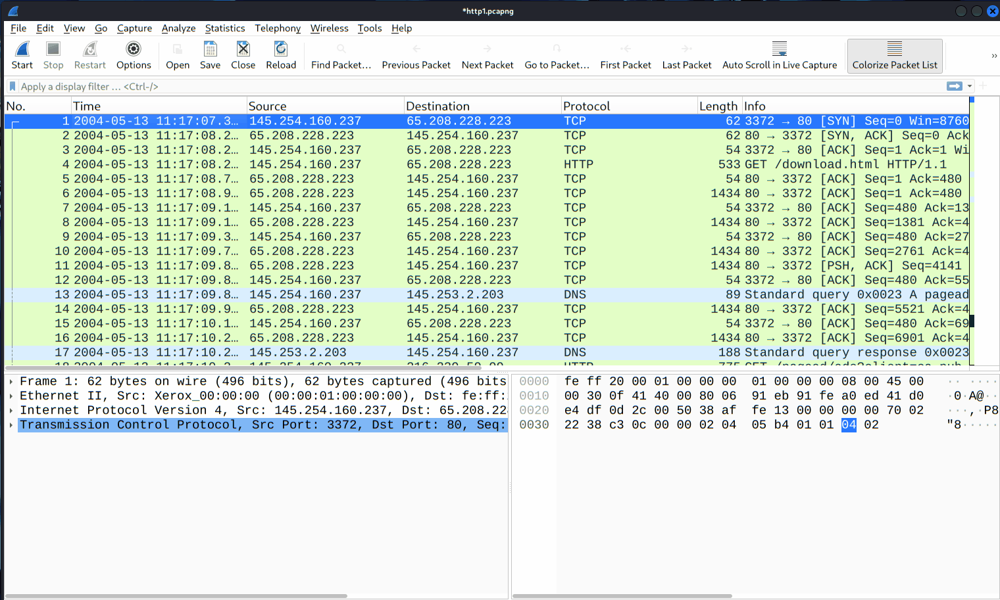
ميزة Export Objects
Wireshark يستطيع استخراج الملفات الحقيقية التي انتقلت عبر الشبكة — صور، HTML، EXE، PDFs. ليس فقط مشاهدة الترافيك، بل سحب الملفات ذاتها.
كيفية الاستخدام
File → Export Objects → HTTP
تفتح نافذة تعرض قائمة بكل الملفات مع نوعها وحجمها. يمكن حفظ ملف واحد أو الكل.
البروتوكولات المدعومة
| البروتوكول | الاستخدام |
|---|
| HTTP | ملفات الويب (الأكثر استخداماً) |
| SMB | ملفات Windows المشتركة |
| TFTP | نقل ملفات بسيط |
| IMF | تحليل البريد الإلكتروني |
استخدامات أمنية
Malware Analysis — إذا حُمّل ملف EXE يمكن استخراجه وفحصه على VirusTotal.
Data Exfiltration — استخراج الملفات المسرّبة من الشبكة.
Web Forensics — استخراج الصفحات التي زارها المستخدم بالكامل.
Email Analysis — استخراج المرفقات عبر IMF.
⚠
قيود مهمة
يعمل فقط مع الترافيك غير المشفر (HTTP لا HTTPS). كذلك يعتمد على TCP Reassembly لتجميع الملفات الكبيرة من Packets متعددة.
16
Time Display Format
تنسيق عرض الوقت
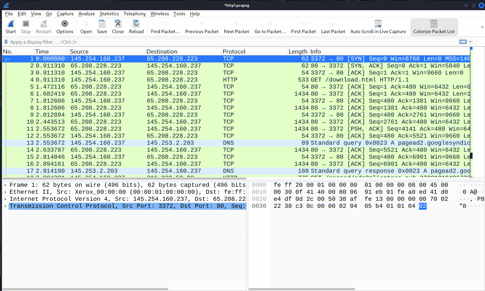
تغيير Time Display Format
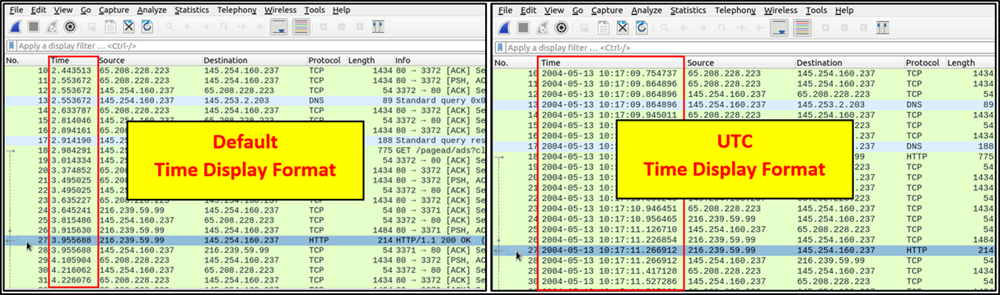
مقارنة بين صيغ الوقت المختلفة
صيغ الوقت المتاحة
| الصيغة | الشكل | متى تستخدمها |
|---|
| Seconds Since Beginning | 0.445313 | تحليل Timing بين الباكيتات |
| UTC Date and Time | 2004-05-13 10:17:09 | الأفضل — ربط مع SIEM ولوج السيرفرات |
| Local Time | حسب إعدادات الجهاز | تجنّبه في التحقيقات — يسبب confusion |
| Time Delta | 0.040058 | قياس الفجوة بين الباكيتات |
تغيير الصيغة
View → Time Display Format → UTC Date and Time
✖
مشكلة Local Time
إذا كان جهازك GMT+2 والسيرفر يعمل بـ GMT، سيكون هناك فرق ساعتين في التوقيت. هذا قد يُضيّع عليك correlation مع الـ Logs الأخرى. الحل: استخدم UTC دائماً.
→
Insight احترافي
استخدم نوعين معاً: UTC لمعرفة الوقت الفعلي، وTime Delta لقياس سرعة الباكيتات. رؤية عدد كبير من الباكيتات في نفس اللحظة قد يدل على Scan أو Flood.
17
Expert Info
Analyze → Expert Information
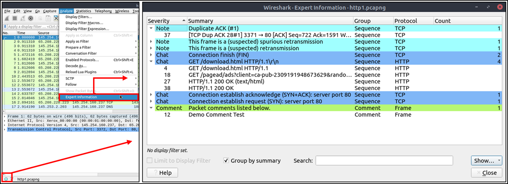
نافذة Expert Information
Expert Info هي ميزة تحليل تلقائي يقدمها Wireshark تعطيك تنبيهات عن سلوك غير طبيعي أو مشكلات. لكن تذكر: هي Hints فقط وليست حكماً نهائياً.
Chat
معلومات اعتيادية — مثل TCP Handshake طبيعي. معلوماتية فقط.
Note
حالة تستحق الانتباه — مثل HTTP Error Code أو استجابة غير متوقعة.
Warn
تحذير — مثل TCP Retransmission أو Latency مرتفع. ابدأ التحليل هنا.
Error
مشكلة فعلية — مثل Malformed Packet أو Protocol Error. راجعها أولاً.
مجموعات التنبيهات المهمة
| المجموعة | ما تعنيه | ملاحظة |
|---|
| Checksum Errors | Packet تالفة | قد تكون False Positive بسبب NIC Offloading |
| Malformed Packets | Packet غير مبنية بشكل صحيح | قد تدل على Bug، Exploit، أو أداة تهجم |
| Deprecated Protocol | بروتوكول قديم | قد يمثل ثغرة أمنية |
| Comment | يظهر عند وجود Packet Comments | معلوماتي فقط |
الطريقة الخاطئة
رؤية Error والحكم فوراً "هذا هجوم" — هذا خطأ متكرر.
الطريقة الصحيحة
1. اقرأ التنبيه → 2. انتقل للباكيت → 3. حللها بنفسك → 4. اربط بالسياق
18
Display Filters
تصفية الترافيك وتضييق التحليل
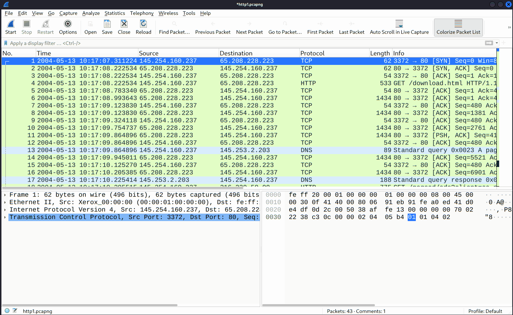
استخدام Display Filters
→
القاعدة الذهبية
"If you can click on it, you can filter it" — أي Field تراه في Packet Details يمكنك Right Click عليه واختيار Apply as Filter.
فلاتر أساسية يجب حفظها
httpعرض HTTP فقط
dnsعرض DNS فقط
tcpعرض TCP فقط
ip.addr == 145.254.160.237كل الترافيك من/إلى IP محدد
ip.src == 192.168.1.1الترافيك الصادر من IP محدد
tcp.port == 80ترافيك على Port محدد
http.request.method == "POST"HTTP POST Requests فقط
http.requestكل HTTP Requests
dns.qry.name contains "login"DNS queries تحتوي على كلمة login
tcp.flags.syn==1 and tcp.flags.ack==0كشف Port Scanning
tcp.analysis.retransmissionPacket Loss وبطء الشبكة
tcp.analysis.flagsTCP Errors عامة
http && ip.src==192.168.1.1AND — دمج شرطين
dns || httpOR — إما dns أو http
Apply as Filter من الـ GUI
3
انقر يميناً على أي Field
4
اختار Apply as Filter → Selected
خيارات Apply as Filter:
Selected
فلترة على هذه القيمة بالتحديد
Not Selected
استبعاد هذه القيمة
And / Or
إضافة شرط إلى الفلتر الحالي
→
نصائح لبناء فلاتر فعّالة
ابدأ واسعاً ثم ضيّق: tcp ثم tcp.port==80 |
استخدم contains للبحث النصي |
استخدم Autocomplete بـ Ctrl+Space |
فلتر واسع جداً = ضوضاء | فلتر ضيق جداً = فقدان بيانات مهمة
19
Conversation Filter & Colourise
تحليل Session كاملة
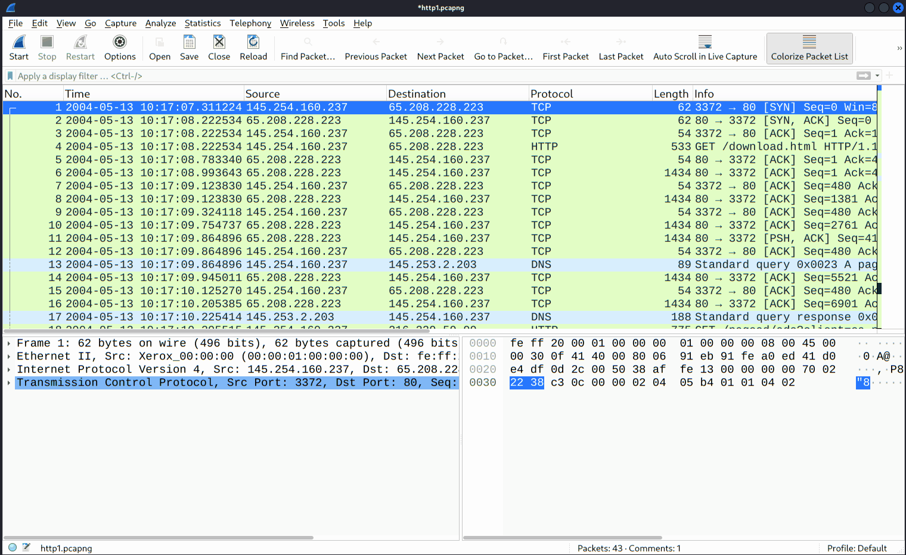
Conversation Filter في الاستخدام
→
Conversation = Session كاملة
بدل تحليل Packet واحدة، Conversation Filter يعرض كل الترافيك بين IP ↔ IP و Port ↔ Port — أي القصة الكاملة.
كيفية الاستخدام
Right Click على Packet → Conversation Filter → TCP
Wireshark يُنشئ فلتراً مثل:
ip.addr==X && tcp.port==Y
يعرض: كل الـ Requests، كل الـ Responses، كل Packets في نفس الـ Session.
Conversation Filter vs Colourise
| الخاصية | Conversation Filter | Colourise |
|---|
| يُخفي باقي الترافيك | نعم | لا |
| يُميّز Session بلون | لا | نعم |
| الاستخدام | تحليل مركّز على Session | رؤية Session وسط الترافيك |
20
Prepare as Filter
بناء فلتر معقد خطوة بخطوة
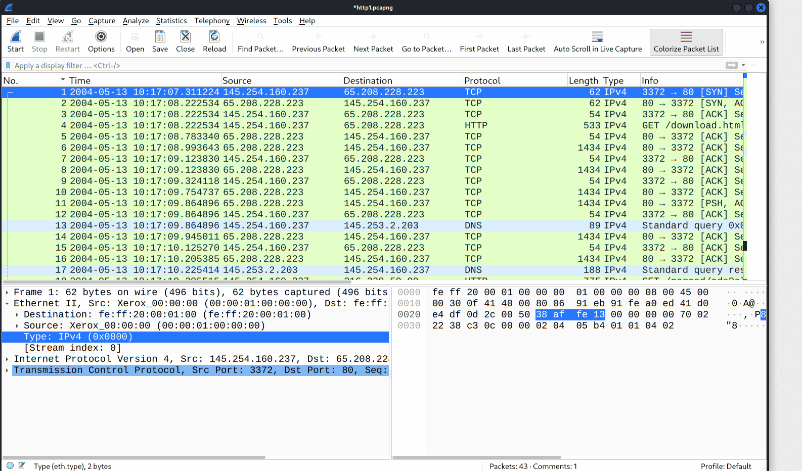
استخدام Prepare as Filter
الفرق عن Apply as Filter
| Apply | Prepare |
|---|
| التنفيذ | فوري | يدوي — لا يُطبق مباشرة |
| التحكم | محدود | عالي |
| الاستخدام | سريع | بناء فلاتر معقدة |
مثال عملي
هدف: تحليل HTTP من IP محدد:
1
Prepare IP: ip.src==192.168.1.1
2
Right Click → ... and Selected لإضافة HTTP
3
الناتج: ip.src==192.168.1.1 && http
4
اضغط Enter لتطبيق الفلتر
21
Apply as Column
إضافة أي Field كعمود في Packet List
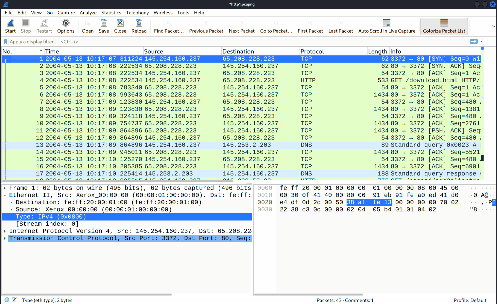
إضافة Column جديد
كيفية الاستخدام
Right Click على أي Field في Packet Details → Apply as Column
يُضيف عموداً جديداً في Packet List يعرض قيمة هذا الـ Field لكل الباكيتات مرة واحدة.
Columns مفيدة جداً
tcp.streamتتبع TCP Sessions بسهولة
http.hostعرض كل المواقع في عمود واحد
dns.qry.nameكل الدومينات — الشذوذ يظهر فوراً
→
Workflow احترافي
لا تُضف Columns كثيرة — يُسبب Clutter |
استخدم Columns حسب الهدف: Malware = domains | Web = host | Network = IPs/Ports |
يمكن حذف أي Column بـ Right Click على Header
22
Follow Stream
إعادة بناء المحادثة الكاملة
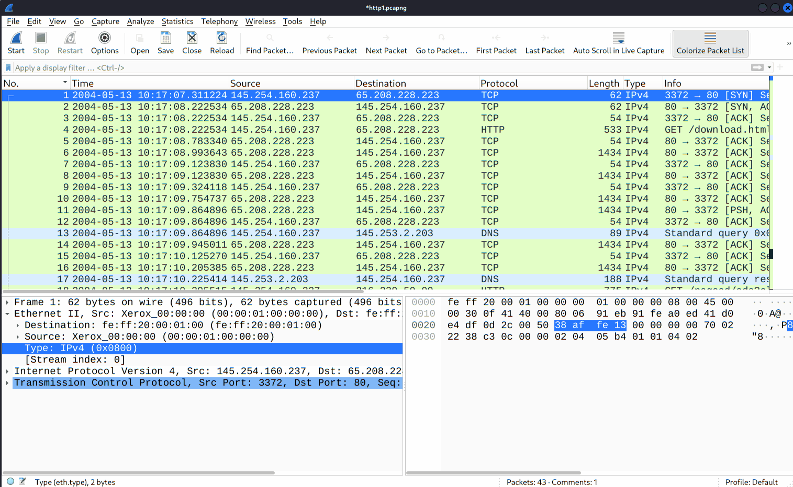
Follow Stream في الاستخدام
Follow Stream يُعيد تجميع الترافيك وعرضه كما تراه التطبيقات — بدلاً من Packets منفصلة، ترى المحادثة الكاملة بين الطرفين.
كيفية الاستخدام
Right Click → Follow → TCP Stream
أو: Analyze → Follow → TCP Stream
النتيجة: نافذة تعرض المحادثة بلونين — أحمر للـ Client وأزرق للـ Server.
GET /login HTTP/1.1
Host: example.com
> HTTP/1.1 200 OK
> <html>...</html>
أنواع Streams
TCP
HTTP، FTP، معظم البروتوكولات — الأكثر استخداماً
HTTP
مخصص للويب — يُظهر المحتوى مباشرة
استخدامات احترافية
▸
تحليل Login — رؤية username/password في HTTP مباشرة
▸
Malware Communication — أوامر C2 وData Exfiltration
▸
Web Traffic Analysis — الصفحات والـ Requests كاملة
Follow Stream vs Conversation Filter
| الخاصية | Follow Stream | Conversation Filter |
|---|
| العرض | Data مجمعة مقروءة | Packets منفصلة |
| الهدف | قراءة المحتوى | تحليل الـ Packets |
| المستوى | Application Layer | Network Layer |
⚠
نقاط مهمة
Follow Stream يُطبق فلتر tcp.stream==X تلقائياً — لإزالته اضغط X في Filter Bar |
لا يعمل مع HTTPS — لن ترى بيانات مفهومة |
يمكن تغيير عرض البيانات بين ASCII وHex
جدول مرجعي سريع
أهم الأدوات ومتى تستخدم كل منها
| الأداة | الهدف | الاستخدام |
|---|
| Display Filter | تضييق الترافيك | أول خطوة دائماً |
| Follow Stream | قراءة المحادثة | بعد تحديد Packet مهمة |
| Conversation Filter | تحليل Session كاملة | لفهم تسلسل الأحداث |
| Find Packet | البحث في الترافيك | البحث عن نص أو Pattern |
| Mark Packet | تمييز Packets مهمة | أثناء التحليل |
| Packet Comments | التوثيق | للتقارير والعمل الجماعي |
| Export Objects | استخراج ملفات | Malware وWeb Forensics |
| Expert Info | تنبيهات تلقائية | نقطة انطلاق للتحليل |
| Apply as Column | رؤية بيانات في جدول | تسريع التحليل |